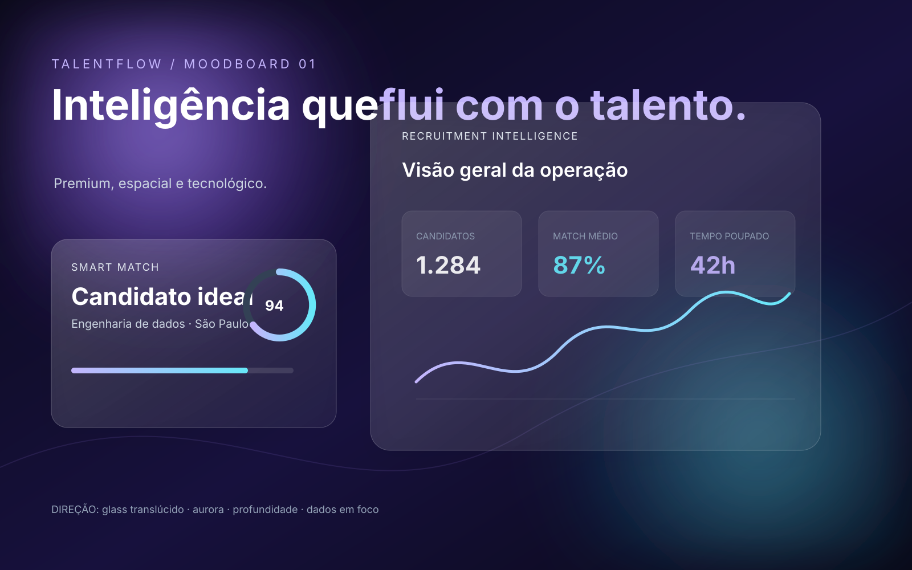
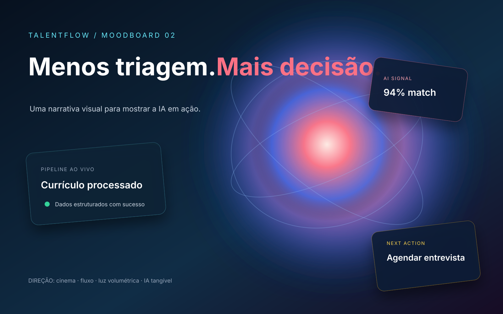
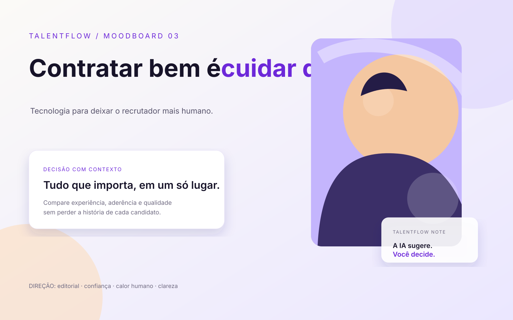

TalentFlow / Visual Directions
Primeiro moodboard comparável do redesign. As três direções usam a mesma proporção e devem ser avaliadas por impacto, clareza, confiança e adequação ao produto.



Primeiro moodboard comparável do redesign. As três direções usam a mesma proporção e devem ser avaliadas por impacto, clareza, confiança e adequação ao produto.


